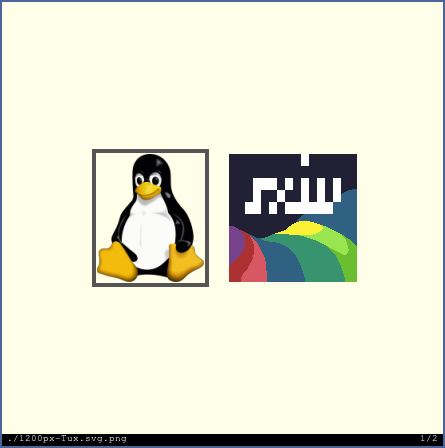

Simple X Image Viewer
This is my fork of sxiv. I created this because a lot of features I found useful were spread around multiple forks of the main repo. C is not my main language (but I can code a bit with it), thats why you will probably see that most of the additions are from 3rd parties. Contributions are more than welcome 🙃.
Features
Those with a new before the feature are additions compared to the main repo
- Basic image operations, e.g. zooming, panning, rotating
- Customizable key and mouse button mappings (in config.h)
- Thumbnail mode: grid of selectable previews of all images
- Ability to cache thumbnails for fast re-loading
- Basic support for multi-frame images
- Load all frames from GIF files and play GIF animations
- Display image information in status bar
- (new) Load all images on parent directory
- (new) Partial svg support (only on image mode for now)
- (new) View images from URL
- (new) Full webp support
- (new) Start from file
- (new) Configurable title
- (new) Configurable bar colors
Screenshots
Image mode:
Thumbnail mode:

Dependencies
sxiv requires the following software to be installed:
- Imlib2
- X11
- Xft
- freetype2
- fontconfig
- librsvg (optional, disabled with
HAVE_CAIRO_SVG=0) - cairo (optional, disabled with
HAVE_CAIRO_SVG=0) - giflib (optional, disabled with
HAVE_GIFLIB=0) - libexif (optional, disabled with
HAVE_LIBEXIF=0) - libwebp (optional, disabled with
HAVE_LIBWEBP=0) - curl (optional, disabled with
HAVE_LIBCURL=0)
Please make sure to install the corresponding development packages in case that
you want to build sxiv on a distribution with separate runtime and development
packages (e.g. *-dev on Debian).
Building
sxiv is built using the commands:
$ make
# make installPlease note, that the latter one requires root privileges.
By default, sxiv is installed using the prefix "/usr/local", so the full path
of the executable will be "/usr/local/bin/sxiv".
You can install sxiv into a directory of your choice by changing the second
command to:
# make PREFIX="/your/dir" installThe build-time specific settings of sxiv can be found in the file config.h.
Please check and change them, so that they fit your needs.
If the file config.h does not already exist, then you have to create it with
the following command:
$ make config.hUsage
Please see the man page for
information on how to use sxiv.
Configuring
The following X resources are supported:
background
Color of the window background
foreground
Color of the window foreground
bar Color of the bar background
text Color of the bar foreground
font Name of Xft bar font
titlePrefix
Any string literal to be used as the window title prefix.
titleSuffix
The format of the window title suffix.
Value Format
0 Basename of file
1 Basename of directory
2 Full path to file
3 Full path to directory
4 Empty string
Please see xrdb(1) on how to change them.Download & Changelog
You can browse the source code repository
on GitHub or get a copy using git with the following command:
git clone https://github.com/GRFreire/sxiv.gitStable releases
v26
(January 16, 2020)
- Maintenance release
v25
(January 26, 2019)
- Support font fallback for missing glyphs
- Fix busy loop when built without inotify
- Use background/foreground colors from X resource database
v24
(October 27, 2017)
- Automatically reload the current image whenever it changes
- Support embedding into other X windows with -e (e.g. tabbed)
- New option -p prevents sxiv from creating cache and temporary files
- Simpler mouse mappings, the most basic features are accessible with the
mouse only (navigate, zoom, pan)
v1.3.2
(December 20, 2015)
- external key handler gets file paths on stdin, not as arguments
- Cache out-of-view thumbnails in the background
- Apply gamma correction to thumbnails
v1.3.1
(November 16, 2014)
- Fixed build error, caused by delayed config.h creation
- Fixed segfault when run with -c
v1.3
(October 24, 2014)
- Extract thumbnails from EXIF tags (requires libexif)
- Zoomable thumbnails, supported sizes defined in config.h
- Fixed build error with giflib version >= 5.1.0
v1.2
(April 24, 2014)
- Added external key handler, called on keys prefixed with
Ctrl-x - New keybinding
{/}to change gamma (by András Mohari) - Support for slideshows, enabled with
-Soption & toggled withs - Added application icon (created by 0ion9)
- Checkerboard background for alpha layer
- Option
-oonly prints files marked withmkey - Fixed rotation/flipping of multi-frame images (gifs)
v1.1.1
(June 2, 2013)
- Various bug fixes
v1.1
(March 30, 2013)
- Added status bar on bottom of window with customizable content
- New keyboard shortcuts
\/|: flip image vertically/horizontally - New keyboard shortcut
Ctrl-6: go to last/alternate image - Added own EXIF orientation handling, removed dependency on libexif
- Fixed various bugs
v1.0
(October 31, 2011)
- Support for multi-frame images & GIF animations
- POSIX compliant (IEEE Std 1003.1-2001)
v0.9
(August 17, 2011)
- Made key and mouse mappings fully configurable in config.h
- Complete code refactoring
v0.8.2
(June 29, 2011)
- POSIX-compliant Makefile; compiles under NetBSD
v0.8.1
(May 8, 2011)
- Fixed fullscreen under window managers, which are not fully EWMH-compliant
v0.8
(April 18, 2011)
- Support for thumbnail caching
- Ability to run external commands (e.g. jpegtran, convert) on current image
v0.7
(February 26, 2011)
- Sort directory entries when using
-rcommand line option - Hide cursor in image mode
- Full functional thumbnail mode, use Return key to switch between image and
thumbnail mode
v0.6
(February 16, 2011)
- Bug fix: Correctly display filenames with umlauts in window title
- Basic support of thumbnails
v0.5
(February 6, 2011)
- New command line option:
-r: open all images in given directories - New key shortcuts:
w: resize image to fit into window;W: resize window
to fit to image
v0.4
(February 1, 2011)
- New command line option:
-F,-g: use fixed window dimensions and apply
a given window geometry - New key shortcut:
r: reload current image
v0.3.1
(January 30, 2011)
- Bug fix: Do not set setuid bit on executable when using
make install - Pan image with mouse while pressing middle mouse button
v0.3
(January 29, 2011)
- New command line options:
-d,-f,-p,-s,-v,-w,-Z,-z - More mouse mappings: Go to next/previous image with left/right click,
scroll image with mouse wheel (horizontally if Shift key is pressed),
zoom image with mouse wheel if Ctrl key is pressed
v0.2
(January 23, 2011)
- Bug fix: Handle window resizes correctly
- New keyboard shortcuts:
g/G: go to first/last image;[/]: go 10
images back/forward - Support for mouse wheel zooming (by Dave Reisner)
- Added fullscreen mode
v0.1
(January 21, 2011)
- Initial release